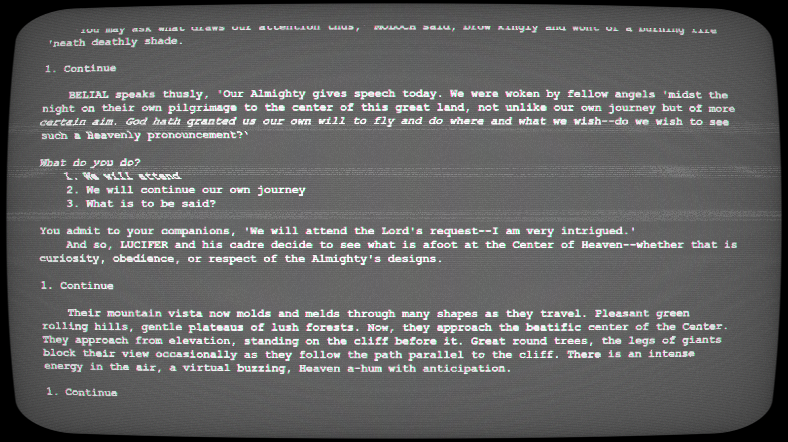

Projects
Projects in bold labeled with 🚧 are still under construction or in-progress.
1 Programming & Computer Science
1.1 Key Notes
I do almost all of my programming on Linux. It’s just easier there. I use Windows Subsystem for Linux (WSL2) in order to have both Windows and Ubuntu (jammy), still using VSCode. So I only get a terminal for Linux but I’ve really enjoyed it and it has really improved both my typing speed and my ability to use the terminal, which I typically prefer to use.
It’s actually kind of crazy, I am also able to access all my Windows files with my bash shell. Therefore, when I want to do some things that are just easier in the terminal, I just keep using bash but on my Windows files.
One of my favorite CLIs is fzf, a fuzzy search on directories.
1.2 Parallel Boids
This is a project I undertook in COMP445 Parallel and Distributed Computer with Professor Libby Shoop. Figure 1 shows an example run of the final product, where 512 boids are being simulated on 4 threads, each boid colored with respect to thread.
Aims
I enjoy parallel programming, yet it can be difficult to achieve the visual understanding and satisfaction of a given algorithm. Therefore, my aim was to implement Boids in parallel and visualize them. My greatest motivation was that I wished to visually observe the speedup of the simulation when rendering in parallel.
I used variety of parallelization paradigms and implemented the algorithm in C/C++.
Tools
I used parallel pragma directives via OpenMP and OpenACC in order to distribute the calculations for boid updates. OpenACC is available via NVIDIA’s High Performance Computing (HPC) SDK, installed to Ubuntu in WSL2, displayed on an X Window.
The HPC SDK provides a new, powerful compiler nvc/nvc++, which is backwards compatible with OpenMP pragma directives, but also pragma acc and pragma acc kernels directives. This compiler also functions with nvprof, NVIDIA’s profiler. Also provides a CUDA install.
The first edition of this boids simulation used psplot with an X window. Once it was shown it could be parallelized that way, I implemented it using a C++ library TSGL (GitHub ), the Thread-Safe Graphics Library, meant for parallel algorithm visualizations, made by an associate of Professor Libby.
EduPar2024 Submission
Professor Libby (Elizabeth) Shoop (Macalester College) and I turned this project into a submission to EduPar2024 as a Peachy Parallel Assignment, intended to help educate future parallel programming students.
This assignment will be presented May 27 in San Francisco by Professor Libby. Program Schedule.
This involved cleaning up code, documenting it amply for both professors and students, and creating homework documents. It features a few different assignments for various levels. A psplot edition using OpenMP, or GPU parallel with OpenACC. Then a higher level version in C++ implemented with TSGL, intended for an upper level undergraduate course, such as the course I took.
1.3 dirview 🚧
When trying to think of an excuse to work in C and the Linux environemnt, I came across the annoying quibble of how incessant it can be to navidate with cd and ls repeatedly when you don’t know where anything is.
So I had the idea of a visual directory explorer where the user can explore with arrows keys, enter or space, alongside a fuzzy-search (fzf) to filter items within the current directory.
It’s not my intention to make the World’s Next Best Linux Directory Explorer, but just a little fun project I’d be happy to spend some time and learning on.
Current Status
The typing bar is in workable state and that’s all that’s needed right now. Next up is to display items in the current directory. Will also figure out how to get
fzfto show just the items in the current directory.My experience in Godot has provided some background experience in using event/signal-based programming.
Used fork exec pattern, piping, dirent, and fzf to
- read current directory contents and write to file
- read said file and send to fzf to be fuzzy filtered
- output filtered contents to new file
It works!…. when standalone.
When implemented in main file, it breaks the window. Since fork replicates the memory space, I now have two tickit terminals running.
Checked out vfork and clone?
Next idea is to fork a thread at the start of main to run as a companion. Could also create a pipe or two for communication between them.
Roadblocks
Use of this TUI library has provided some challenges. Though a documentation page exists, it is insufficient for my tastes. It seems to provide brief comments helpful mostly to a person already familiar with the library. Example projects are the only way to begin to parse the unknown territory.
Some other required documetation is also missing: It is left as a mystery as to which items are allocated on the heap. The “object” types this library provides largely have an ..._unref() command, yet it requires trial and error to surmise this important memory status.
I also believe the best documentation is code that documents itself.
Lessons
Working with tickit has given me a lot of experience with working in unfamiliar territory. Additionally, I had not before used any libraries like this, providing primitive object and event behavior within C. Member functions are replicated with structs passed as pointers, side effects the goal with little safety save for the compiler type checker and runtime memory safety. Don’t worry C, you’re still cool. Makes me understand the significance of the choices made within the construction of object oriented programming languages, such as member functions providing API.
1.4 Rust Work
See Section 2.2. I’ve been learning and using Rust to contribute to a Topological Data Analysis Crate called OAT (Open Applied Topology).
Now, the lead dev of this library had said before Rust was an easy language to learn, and I disagreed. Me disagreeing doesn’t mean I didn’t like the language–in fact I’ve come to really like it. I really like its trait system, for one. Anyway, I won’t linger too long on the specifics.
It’s really satisfying implementing generic data structures! (who knew). Instead of doing a HashMap default-get with .entry().and_modify(...).or_insert(...), why don’t I write a new trait for HashMap to offer the same implementation? I know that’s nothing crazy, but still. The OAT library I’ve been working on is entirely written in generics in order to offer modularity and flexibility for operations on different objects. For example, an entry of a matrix will be required to have an algebraic ring defining the operations on said objects. And so on, through a maze of dependent objects.
The Rust analyzer is an amazing tool.
The lead dev Greg and I spent three hours over zoom tracing a bug that led to occasional crashes within the compiled Python library. It turned out to be some confusion about some custom-defined order operators, a minor or major view ascending on a matrix, some reverse iterators, and another iterator which required a strict ascent on its data. The solution? Comment out the lines that reversed those iterators.
1.5 Cartoon Graphics Outline Shader
1.6 Retuna 🐟
Retuna is an eartraining app which fills the gaps left by other eartraining apps. As part of a semester-long development cycle, we collaborated as a team to develop a game in Godot. We planned a project timeline and identified a minimum viable product. In the end, we published game on itch.io and ensured compatibility with alternative input methods. As a group of three, we had to manage the division of labor, handle communication between teammates, and, of course, solve merge conflicts.
Description
As a game, the game play window will have a set of notes in a melody, and some number of them are detuned by some amount. The measure of “detune” is in cents, and 50 cents out of tune is the most you can be before you’re just approaching another note. Therefore, we have fine-grained control over the detune of the notes, which can provide extra difficulty. More notes can also provide difficulty.
The player can listen to the melody as many times as they want and may individually select notes to replay them. Once the player makes their decision, they may check their solution. They may attempt as many times as they wish.
Work
I had some minimal previous experience with Godot, but we picked it as our platform for several reasons. Godot already had pre-made nodes which handled audio, so we were readily able to play the notes we needed, rather than having to install strange, underdocumented libraries. We also wished to avoid Javascript for similar reasons–anyway, Godot was already incredibly portable to almost every platform. Therefore, gladly, we were able to publish our polished game on itch.io.
As a success story, I’m not a musician and I greatly improved at telling when notes were out of tune
Challenges
One of the biggest challenges of programming in Godot was figuring out the proper programmatic structure. What has what as a child and how do we send information between them? Godot has a very tree-centric structure, so it was difficult to disambiguate all the different nodes.
My work
The freeplay setting select menu is entirely my own effort. I created the custom sliders, and I’m really proud of how one slider will impact a different slider. Additionally, since the entire game had to be navigable with keyboard or controller, so did the freeplay settings. We had to make some compromises due to the limitation that a horizontal slider, when selected, is adjusted with left and right.
Oh yeah, and to color the text differently based on the slider bar’s position, I had to write a shader, haha.
Within the main game window, I implemented the functionality for placing notes, the play bar, and the playbar playing the notes. All the freeplay settings had to be set every time the main game window was loaded. Additionally, I made it so freeplay settings kept their values when going back to the options. That was actually kind of a pain.
1.7 Chapel Programming Languages Study
Due to my interest in continuing my learning in parallel programming, I got involved in an independent study for the duration of my final semester at Macalester. In this time I studied and learned the Chapel programming language and wrote an introductory chapter on the language which will be included within the intermediate or advanced PDC textbooks on learnpdc.org.
Chapel is a programming language built to provide accessible parallel programming. What required compiler directives, other libraries, and intensive thought in C or C++ is now accessible through simple language keywords and helpful abstractions. Chapel is also intended to be easy to pick up and to be familiar to Python programmers, while still being a fast, scalable, statically typed language. Go to the Chapel home page for more information.
Installation for me required building from source.
The best thing I did with Chapel was create fractal images, see below Section 1.8 for more info.
One of my favorite features in Chapel (besides the obvious) is the implementation of config variables. Write config var N: uint(32) = 100; and now you have a runtime commandline option accessed with --N=....
1.8 Fractals in Chapel
Inspired by a talk Professor Paul Cantrell gave titled “Animating Fractals for Fun and No Profit”.
This method involves the effects of a polar to rectangular coordinates transform, or vice-versa. Given a random starting position, transform it randomly polar->rectangular or rectangular->polar somewhere in the range of one to ten billion times, saving it to a pixel for each position.
The preliminary method to speed this up, same as in Paul’s journey, is to speed up the random number generation. Since there are only two possible paths, you can utilize the bits of a random 64-bit integer. Next step was to pregenerate the random numbers. Because this program was written in Chapel, parallelizing it was as simple as writing forall in place of a for in the correct spot.
Through some happy mistakes, I managed to create some alternative results of the fractals. The image is an array of atomic integers essentially functioning as a CCD camera sent to an exterior function (now in Chapel source) to save the array to a .bmp. Since it is like a CCD, the image is greyscale. Color is introduced by myself in art programs.
See more in the dedicated page for art.
1.9 Paradise Lost: The Text Adventure
A text adventure of the Paradise Lost, focusing on the mentality and inevitability of Satan’s betrayal.
Paradise Lost is the 12-book epic poem composed in blank verse by John Milton in the mid-17th century. It greatly expands on the book of Genesis and focuses on Satan’s fall, his plans in Hell, and him eventually surveying the new Earth and the Eden where God’s newest creation now lives. He spies the two humans, Adam and Eve, and aims to corrupt them.
Highly inspired by the text adventures featured in The Talos Principle and its sequel, The Talos Principle 2.
Developed in Godot 4, which allowed simple development. Additionally, Godot has visual editing, nodes for playing audio, and greater opportunity for artistic flair for less cost.

1.10 Dogger
Dogger is a version of Frogger where you play as a dog who must retrieve tennis balls your owner has thrown too far. I made this as part of a group in a Java class sophomore year of college.
The dog’s name is Chaucer Bandogrick III. He doesn’t die, he just gets hurt.
I created the animations for the dog, alongside the tileset. My groupmate Dan made the vehicles and he did a fantastic job.
This one was just a lot of fun to make. And it’s another game with a name pun.
1.11 Budgie’s Adventure in Solitude (a game)
Budgie is a platformer game I made the junior year of my highschool in Unity as part of a video game development course. This was the first programming project I ever worked on. I additionally did all the art and animation.
Air jumps cost health and all diamonds must be collected before the player can exit via the door. Why are they called Budgie, Robert, and Michael? I don’t know.
It was super valuable to gain this experience programming at this age because my high school did not have any other programming courses
1.12 Misc
This is for any smaller projects I’ve worked on that I’ll only shortly mention
2 Mathematics
2.1 Metrics in Topological Data Analysis
Topology is a field of mathematics concerned with the fundamental description of mathematic “objects”, quantifying and comparing their shape and relationship. More physically, topology is about the relationship of objects, such as the number of holes and contained voids, and how one can continuously deform object \(A\) to become object \(B\) without any cutting or gluing.
The most famous example of this problem is the torus (e.g. donut) and the coffee cup. Topologically, they are the same shape!
2.2 Topology Research Assistant 🚧
I have the pleasure of being a post-bachelors research assistant as part of an 8-week research cohort with Professor Lori Ziegelmeier at Macalester College. As a cohort of four, we will contribute to Lori’s Topological Data Analysis research.
Our research for this summer is regarding the connection between keywords in scientific papers. Topological data analysis can interpret the shape of data, so the aim of this project is to identify connections between research fields given their keywords and topics. Additionally, this can be used to identify regions of research that have not otherwise received attention–What if there’s some overlap of fields ripe for original research?
This research program goes from 20 May to 12 July 2024. More details will follow.
The following details:
I am working on the Rust crate OAT (open applied topology) with the lead developer Greg Henselman-Petrusek. This is a currently-proprietary library for performing Topological Data Analysis, meant to be a highly modular library with traits to define algebraic properties on any object. It has the capability to return cycle optimizations alongside with a great amount of informations about the simplices involved in that cycle.
Some of the computational results of OAT take a long time to calculate, so my efforts to date have focused on finding ways to save these objects. Once compiled to a Python library, this one object, a FactoredBoundaryMatrixVr, cannot be saved using either pickle or dill or any other method.
Next was to try within Rust, to use Serde to Serialize and Deserialize each object. Unfortunately, this requires essentially fully recursively defined serialization and deserialization on every object. It becomes a cat-and-mouse game of fixing errors, adding trait bounds, derives, and so on. Unfortunately, there are some things which cannot be serialized. Structs with references don’t work. Some struct wrapeprs, such as Flatten within Iterator, do not have a serialization. Even though Iterator does! Flatten<Iterator> is just an iterator!! Ugh.
The complicated data results are actually largely stored in the U-match decomposition (a matrix factorization), so my next effort will be to work on saving that data. It may involve some slight algorithmic changes.
I actually really like Rust so far!!
3 Miscellaneous
3.1 Writing
- I’ve done some of my own creative writing.
- I started writing poetry fall of my senior year of college during finals as an interesting way to procrastinate my Math and Computer Science finals and projects
- I really like it and I’ve continued to write
Tattered Time, or That Starred Ensign
- Tattered Time is my longest piece, six pages of two columns.
- In terms of style, it is my own, but inspired in short line length by lyrics written by Anneke van Giersbergen
- An additional inspiration was learning some amount of Welsh and its medieval literature. In form it is unlike their literature, yet echoes some themes such as prophecy of oppression.
Time (a sestina)
- This a sestina, a peculiar poetical form from Italy, where line-ending words are repeated and permuted under a certain pattern.
- This was not easy to write, but it is interested and I’d be curious to have another try so many years after this was written.
- I wrote this particular one as part of a creative writing course.
Creation Myth
- This poem was created under the idea of a being that is immortal (yet not invincible) living forever and seeing everything the universe can offer, yet still of fallible, human memory.
- I wrote this and rewrote it under revision as part of the same creative writing course.
3.2 Modding
I’ve contributed mods to the Borderlands 2 modding community, see BLCMods . I am a repository manager and I occasionally respond to pull requests.